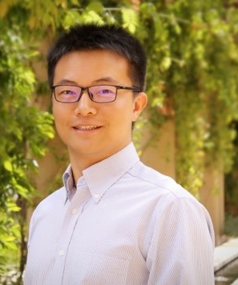

Sponsored by:
Supported by:


|
|
|

|
|
|---|---|
Supported by:
Tutorials
Date: Monday, January 13, 2020 (9:00-18:00)
| Room 306A |
Room 306B |
Room 307A |
Room 307B |
|
| 9:00 - 11:30 |
Tutorial-1 [9:00-11:30] AI Chip Technologies and DFT Methodologies |
Tutorial-2 [9:00-11:30] A Journey from Devices to Systems with FeFETs and NCFETs |
Tutorial-3 [9:00-11:30] Comparison and Summary of Impulse-Sensitivity-Function (ISF) Extraction for Oscillator Phase Noise Optimization |
Tutorial-4 [9:00-11:30] General Trends of Security Engineering for In-vehicle Network Architecture in Modern Electric Vehicle |
| 13:00 - 18:00 |
Tutorial-5 [15:30-18:00] Machine Learning for Reliability of ICs and Systems |
Tutorial-6 [13:00-15:20] Compression and Neural Architecture Search for Efficient Deep Learning Tutorial-7 [15:30-18:00] Designing Application-Specific AI Processors |
Tutorial-8 [14:00-18:00] Hardware-based Security Solutions for the Internet of Things |
Tutorial-9 [14:00-18:00] An Emerging Trend in Post Moore Era: Monolithic 3D IC Technology |
Tutorial-1:Monday, January 13, 9:00-11:30@Room306A
AI Chip Technologies and DFT Methodologies
- Organizer:
- Yu Huang (Mentor, A Siemens Business)
- Speakers:
- Rahul Singhal (Mentor, A Siemens Business)
- Yu Huang (Mentor, A Siemens Business)
Abstract:
Hardware acceleration for Artificial Intelligence (AI) is now a very competitive and rapidly evolving market. In this tutorial, we will start by covering the basics of deep learning. We will proceed to give an overview of the new and exciting field of using AI chips to accelerate deep learning computations. It will cover the critical and special characteristics and the architecture of the most popular AI chips. Next we will summarize the features of the AI chips from design-for-test (DFT) perspective and introduce the DFT technologies that can help testing AI chips and speeding up time-to-market. Finally, we will present a few case studies on how DFT is implemented on the real AI chips.Biography:
Dr. Yu Huang is a Senior Key Expert in the Silicon Test Systems Division of Mentor, A Siemens Business. His research interests include VLSI SoC testing, ATPG, compression and diagnosis. He holds 38 US patents. He has published more than 110 papers in leading IEEE Journals, conferences and workshops. He is a senior member of the IEEE. He has served as technical program committee member for DAC, ITC, SOCC, ATS, ETS, ASPDAC, NATW and other conferences and workshops in the testing area. He received a Ph.D. from the University of Iowa in 2002. Mr. Rahul Singhal is a Technical Marketing Engineer with Tessent Solutions group of Mentor, A Siemens Business. His focus is on the
industry requirements in the areas of ATPG, compression, low pin count testing and DFT for AI chips architectures. He is currently a program committee member
of NATW. Rahul received his M.S. in Electrical and Computer Engineering from Portland State University in 2011.
Mr. Rahul Singhal is a Technical Marketing Engineer with Tessent Solutions group of Mentor, A Siemens Business. His focus is on the
industry requirements in the areas of ATPG, compression, low pin count testing and DFT for AI chips architectures. He is currently a program committee member
of NATW. Rahul received his M.S. in Electrical and Computer Engineering from Portland State University in 2011.
Tutorial-2:Monday, January 13, 9:00-11:30@Room306B
A Journey from Devices to Systems with FeFETs and NCFETs
- Organizer:
- Prof. X.Sharon Hu (University of Notre Dame)
- Speakers:
- Prof. X.Sharon Hu (University of Notre Dame) or Xunzhao Yin (Zhejiang University)
- Dr. Hussam Amrouch (Karlsruhe Institute of Technology)
Abstract:
FeFETs for In-Memory Computing:Data transfer between a processor and memory is a major bottleneck in improving application-level performance. This is particularly the case for data intensive tasks such as some machine learning applications. In-memory computing, where certain data processing is performed in memory, can be an effective solution to address this bottleneck. Thus, compact, low-power, fast and non-volatile in-memory computing is highly desirable. This talk presents a cross-layer effort of designing in-memory computing modules based on ferroelectric field effect transistors (FeFETs), an emerging, non-volatile device. An FeFET is made by integrating a ferroelectric material layer in the gate stack of a MOSFET, and can behave as both a transistor and a non-volatile storage element. This unique property enables area efficient and low-power finely integrated logic and memory. After introducing the basics of FeFETs, this talk will focus on two major topics on FeFET based circuit and architecture designs: (i) FeFET based ternary content addressable memory (TCAM), and (ii) FeFET based Compute-In-Memory (CiM). For each topic, issues related to circuits, architectures and application-level benchmarking will be elaborated. We will culminate the talk with a specific application-level case study, i.e., memory augmented neural networks for few-shot learning.
NCFETs to Address the Fundamental Limits in Technology Scaling:
The inability of MOSFET transistors to switch faster than 60mV/decade, due to the nonscalable Boltzmann factor, is one of the key fundamental limits in physics for technology scaling. This is, in fact, the bottleneck in voltage scaling, which had led to the discontinuation of Dennard’s scaling more than a decade ago. As a result, on-chip power densities have continuously increased and the operating frequency of processors stopped improving in the last decade to prevent unsustainable on-chip temperatures. In this talk, we will demonstrate how improvements in the electrical characteristics of transistors, obtained by a ferroelectric material, can be investigated from physics, where they do originate, all the way up to the system level, where they ultimately affect the efficiency of computing. We will focus on the Negative Capacitance FET (NCFET), which is unlike the abovementioned FeFET devices operate in the hysteresis-free region. We will explain how NCFET pushes the sub-threshold swing to below its fundamental limit and how this can revive the prior trends in processor design with respect to voltage and frequency scaling. We will focus on answering the following three key questions to draw the impact of NCFET technology on computing efficiency: In how far NCFET technology will enable processors (i) to operate at higher frequencies without increasing voltage? (ii) to operate at higher frequencies without increasing power density? and (iii) to operate at lower voltages, while still fulfilling performance requirement? The latter is substantial for IoT devices, where available power budgets are extremely restricted. We will also demonstrate how employing NCFET technology will have a significant impact not only on circuits but also on architecture- and system-level management techniques. For example, as opposed to conventional CMOS technology in which reducing the voltage minimizes the leakage power, NCFET has an inverse dependency. This means that conventional power management techniques will not work any longer since they would lead to suboptimal results depending on system-level workload properties. Such an example and others of the implications at the architectural and system levels will be also discussed during this tutorial talk towards providing the audience with the big picture behind NCFET technology.
Biography:
Prof. X. Sharon Hu is a professor in the department of Computer Science and Engineering at the University of Notre Dame, USA. Her research interests include low-power system design, circuit and architecture design with emerging technologies, hardware/software co-design and real-time embedded systems. She has published more than 300 papers in these areas. She received 3 best paper awards including one from the Design Automation Conference (DAC) and has participated in several large industry and government sponsored center-level projects and is a theme leader in an NSF/SRC E2CDA project. She is the General Chair of DAC in 2018 and was the TPC chair of DAC in 2015. She also served as Associate Editor for IEEE Transactions on VLSI, ACM Transactions on Design Automation of Electronic Systems, etc. and is an Associate Editor of ACM Transactions on Cyber-Physical Systems. X. Sharon Hu is a Fellow of the IEEE.Prof. Xunzhao Yin is an assistant professor of the College of Information Science and Electronic Engineering at Zhejiang University. He received his Ph.D. degree in Computer Science and Engineering from University of Notre Dame in 2019 and B.S. degree in Electronic Engineering from Tsinghua University in 2013, respectively. His research interests include emerging circuit/architecture designs and novel computing paradigms with both CMOS and emerging technologies. He received the Outstanding Research Assistant Award in the Department of CSE at University of Notre Dame in 2017, and Bronze medal of Student Research Competition at ICCAD2016, etc.
Dr. Hussam Amrouch is a Research Group Leader at the Chair for Embedded Systems, Karlsruhe Institute of Technology (KIT), Germany. He is leading of the Dependable Hardware research group. He received his Ph.D. degree from KIT in 2015 with distinct (summa cum laude). His main research interests are emerging technologies, VLSI design and design for reliability at the device, circuit and system levels. He holds seven HiPEAC Paper Awards. He has published around 60 papers in these areas and receieved recently three best paper nominations at DAC'16, DAC'17 and DATE'17. He currently serves as Associate Editor at Integration, the VLSI Journal.
Tutorial-3:Monday, January 13, 9:00-11:30@Room307A
Comparison and Summary of Impulse-Sensitivity-Function (ISF) Extraction for Oscillator Phase Noise Optimization
- Organizer:
- Dr. Yong Chen(Nick) (University of Macau)
- Speakers:
- Dr. Yong Chen(Nick) (University of Macau)
Abstract:
TBDBiography:
Prof. Yong Chen received the B.Eng. degree in electronic and information engineering, Communication University of China (CUC), Beijing, China, in 2005, and the Ph.D. in Engineering degree in microelectronics and solid- state electronics, Institute of Microelectronics of Chinese Academy of Sciences (IMECAS), Beijing, China, in 2010. From 2010 to 2013, He worked as Post-Doctoral Researcher in Institute of Microelectronics, Tsinghua University, Beijing, China. From 2013 to 2016, he was Research Fellow in VIRTUS/EEE, Nanyang Technological University, Singapore. Since March 2016, he is an Assistant Professor of the State Key Laboratory of Analog and Mixed-Signal VLSI (AMSV) of University of Macau, Macao, China. His research interests include integrated circuits involving analog/mixed-signal/RF/mm-wave/wireline. Dr. Chen serves as an Associate Editor of IEEE Access since 2019 and Vice Chair of IEEE Macau CAS Chapter (’19-‘20). He services a conference local organization committee of ASSCC (’19) and a member of Technical Program Committee of APCCAS (‘19). His team reports 2 chip inventions at the 2019 IEEE International Solid-State Circuits Conference - ISSCC (Chip Olympics): mm-wave PLL (‘19) and VCO (‘19).Tutorial-4:Monday, January 13, 9:00-11:30@Room307B
General Trends of Security Engineering for In-vehicle Network Architecture in Modern Electric Vehicle
- Organizer:
- Dr. Yi (Estelle) Wang (Continental Automotive Singapore)
- Speakers:
- Dr. Yi (Estelle) Wang (Continental Automotive Singapore)
- Prof. Naehyuck Chang (Korea Advanced Institute of Science and Technology)
Abstract:
In this tutorial, we will cover two parts. The first part depicts the in-vehicle network architecture of the modern electric vehicle. The second part analyzes the security-related issue in an automotive domain from an automotive industrial tier-1 perspective (Top 5 in the worldwide and Top2 in Germany).The motivation of this tutorial is to have a brief view about current hot topic, automotive electric vehicle and automotive security, which has attracted more and more attentions, especially in ASP-DAC in terms of the number of submissions related to this fields.
The first part presents the architecture of a modern electric vehicle and covers three aspects:
(1) Why do we drive electric vehicles? It is not easy to say that electric vehicles are higher performance compared with a similar price range of internal combustion engine vehicles. There are financial benefits including Government subsidies and tax deduction, which cannot be sustainable. A low maintenance cost is a good advantage, but vehicle depreciation is a big question. Therefore, environmental friendliness should be one clear motivation to drive electric vehicles. However, electric vehicles are only “zero exhaust emission” because of tire and brake emissions, which occupy a large portion of the total vehicle emissions. Even putting aside the tire and brake emissions, electric vehicles still contribute to a significant amount of pollution because of the source of electricity. Electric vehicles produce less than half of equivalent exhaust emissions compared with gasoline vehicles and not much different from that of hybrid vehicles. Higher MPGe (mile per gallon gasoline equivalent) of electric vehicles can largely mislead the energy efficiency when it comes to “well to wheel” efficiency taking the entire energy ecosystem into account.
(2) Challenges to make more efficient electric vehicles: It is challenging to make electric vehicles more fuel-efficient because the key powertrain components are already highly efficient, and therefore, there is a very narrow headroom for further enhancement. Consequently, the challenges for extended range of electric vehicles end up with the deployment of more lighter materials, which directly impacts on the manufacturing and repair costs, and it may make the actual cost of ownership very high. An extended driving range of electric vehicles is one of the most demanding requirements of the current and potential electric vehicle owners, but the use of a larger-capacity battery pack makes the vehicle curb weight heavier and thus the fuel efficiency worse.
(3) A system-level solution to enhance electric vehicle fuel efficiency with current powertrain technology: First, we develop an instantaneous power consumption modeling of electric vehicles by the curb weights, speed, acceleration, road slope, passenger and cargo weights, motor capacity, and so on, as a battery discharge model. We ensure the model fidelity as we fabricate a lightweight custom electric vehicle perform an extensive measurement. The model fidelity enables us to achieve a more accurate range estimation. We attempt both design and runtime energy optimization using electric-vehicle-specific energy characteristics. We emphasize that electric vehicles show completely different fuel consumption behaviors from internal combustion engine vehicles due to the significant discrepancy in the drivetrain. We introduce minimum-energy driving methods for electric vehicles, which are largely different from eco-driving methods of internal combustion engine vehicles. We also propose a rapid energy-aware electric vehicle synthesis that allows users to quickly customize their own electric vehicle powertrain specification without understanding the technology.
The second part presents a general introduction to security in automotive engineering. Continental, as a leading automotive technology company, has a holistic security architecture to cope with current and future challenges for electric vehicles, which details protection from a single ECU to the gateway and from in-vehicle communication to car-to-car/car-to-infrastructure communication and backend communication.
From the Continental's perspective, vehicle architecture renovation enlarges the attacking surface of a vehicle and brings more challenges in automotive security. Current challenges are feasible implementation, security process, state-of-the-art technology, heterogeneity architecture, secure development, and legislation, etc. Future automotive security engineering includes the discussions about automotive Ethernet, anomaly detection system, over the air update, post-quantum cryptography, and crypto agility. We detailed key technologies in this domain and provide an overview of each technology used in a modern electric vehicle.
Biography:
Prof. Naehyuck Chang is a Full Professor at the Department of Electrical Engineering, Korea Advanced Institute of Science and Technology (KAIST) from 2014. Before he joined KAIST, he was with the Department of Computer Science and Engineering, Seoul National University from 1997 to 2014. Dr. Chang also served as a Vice Dean of College of Engineering, Seoul National University from 2011 to 2013. His current research interests include low-power embedded systems and Design Automation of Things such as systematic design and optimization of Cyber-physical Systems.Dr. Chang is an ACM Fellow and an IEEE Fellow for contribution to low-power systems. He was the Chair of the ACM SIGDA (Special Interest Group on Design Automation) and the Past Chair of ACM SIGDA. Dr. Chang is the Editor-in-Chief of the ACM (Association for Computing Machinery) Transactions on Design Automation of Electronic Systems, and an Associate Editor of IEEE Transactions on Very Large Scale Integration Systems. He also served for IEEE Transactions on Computer-Aided Design of Integrated Circuits and Systems, IEEE Embedded Systems Letters, ACM Transactions on Embedded Computing Systems, and so on, as an Associate Editor.
Dr. Chang is (was) the General Co-Chair of VLSI-SoC (Very Large Scale Integration) 2015, ICCD (International Conference on Computer Design) 2014 and 2015, ISLPED (International Symposium on Low-Power Electronics and Design) 2011, etc. Dr. Chang is the Technical Program Chair of DAC (Design Automation Conference) 2016. He was the Technical Program (Co-)Chair of ASP-DAC (Asia and South Pacific Design Automation Conference) 2015, ICCD 2014, CODES+ISSS (Hardware-Software Codesign and System Synthesis) 2012, ISLPED 2009, etc.
Dr. Chang is the winner of the 2014 ISLPED Best Paper Award, 2011 SAE Vincent Bendix Automotive Electronics Engineering Award, 2011 Sinyang Academic Award, 2009 IEEE SSCS International SoC Design Conference Seoul Chapter Award, and several ISLPED Low-Power Design Contest Awards in 2002, 2003, 2004, 2007, 2012, 2014, and 2017.
Dr. Chang is a co-founder and the founding CEO of EMVcon Inc., a company for a battery solution of electric vehicle conversion.
Dr. Yi Wang received the Ph.D. degree in School of Computer Engineering from Nanyang Technological University, Singapore in 2008. Dr. Wang is currently a principal specialist in automotive security & privacy, Security & Privacy Competence Center, Corporate Systems and Technology, Continental Teves AG & Co. oHG (Frankfurt, Germany) from July 2016. Currently, she is leading the research topics at APAC on embedded automotive security including automotive Ethernet security, Intrusion Detection System/Anomaly Detection System (IDS/ADS) for in-vehicle network, side channel attacks/countermeasures for ECUs，and post quantum cryptography in embedded system. She works as a security specialist consultant for Continental business units and automotive OEMs (China, Japan and German). She is also responsible for the regulations and standardizations of Cybersecurity in APAC (Singapore, China, Japan, Korea), understanding the upcoming standard: ISO/SAE 21434 Road Vehicles – Cybersecurity Engineering and involving the upcoming regulations UNECE WP29.
Dr. Wang is also active in society activities with more than 40 international top journal (IEEE transactions and ACM transactions)/conference papers and 5 patents. She is a senior IEEE member. She is served as a Committee Member of the Singapore Chapter of the IEEE Circuit and System. She has been served as a Technical Program Committee member for ASP-DAC 2016, ASP-DAC 2018 (security track), CPSS 2018. I have been a program committee member of various reputable conferences, such as FPT-2013, FPT-2014, WESS-2014, UIC-2010, UIC-2011, UIC-2012, UIC-2013, etc., and a reviewer for many conferences/journals, such as TVLSI, TCAS-I, TCAS-II, TRETS, JSA, MICPRO, CSSP, CHES, FPT, WESS, ISCAS, ASP-DAC, VLSI, Latnicrypt, ICCIA, UIC, TSP, etc.
Tutorial-5: Monday, January 13, 15:30 -18:00@Room306A
Machine Learning for Reliability of ICs and Systems
- Organizer:
- Mehdi B. Tahoori (Karlsruhe Institute of Technology)
- Speakers:
- Krishnendu Chakrabarty (Duke University)
- Mehdi B. Tahoori (Karlsruhe Institute of Technology)
Abstract:
With increasing the complexity of digital systems and the use of advanced nanoscale technology nodes, various process and runtime variabilities threaten the correct operation of these systems. The interdependence of these reliability detractors and their dependencies to circuit structure as well as running workloads makes it very hard to derive simple deterministic models to analyze and target them. As a result, machine learning techniques can be used to extract useful information which can be used to effectively monitor and improve the reliability of digital systems. These learning schemes are typically performed offline on large data sets in order to obtain various regression models which then are used during runtime operation to predict the health of the system and guide appropriate adaptation and countermeasure schemes. The purpose of this tutorial is to discuss and evaluate various learning schemes in order to analyze the reliability of the ICs and systems due to various runtime failure mechanisms which originate from process and runtime variabilities such as thermal and voltage fluctuations, device and interconnect aging mechanisms, as well as radiation-induced soft errors. The tutorial will also describe how time-series data analytics based on key performance indicators can be used to detect anomalies and predict failure in complex electronic systems. A comprehensive set of experimental results will be presented for data collected during 30 days of field operation from over 20 core routers.Biography:
Prof. Mehdi Tahoori is currently a Full Professor and the Chair of Dependable Nano-Computing, Institute of Computer Science and Engineering, Department of Computer Science, Karlsruhe Institute of Technology, Karlsruhe, Germany. He received the B.S. degree in computer engineering from the Sharif University of Technology, Tehran, Iran, in 2000, and the M.S. and Ph.D. degrees in electrical engineering from Stanford University, Stanford, CA, in 2002 and 2003, respectively. In 2003, he was an Assistant Professor with the Department of Electrical and Computer Engineering, Northeastern University, where he became an Associate Professor in 2009. From August to December 2015, he was a visiting professor at VLSI Design and Education Center (VDEC), University of Tokyo, Japan. From 2002 to 2003, he was a Research Scientist with Fujitsu Laboratories of America, Sunnyvale, CA. He has authored over 250 publications in major journals and conference proceedings on a wide range of topics, from dependable computing and emerging nanotechnologies to system biology, and holds several US and European patents. He is currently the editor-in-chief of Microelectronic Reliability journal, associate editor for IEEE Design and Test Magazine, coordinating editor for Springer Journal of Electronic Testing (JETTA), and associate editor of IET Computers and Digital Techniques. He is the program chair of VLSI Test Symposium 2018 and General Chair of European Test Symposium 2019. Prof. Tahoori was a recipient of the National Science Foundation Early Faculty Development (CAREER) Award. He has received several best paper nominations and awards at various conferences and journals.Prof. Krishnendu Chakrabarty received the B. Tech. degree from the Indian Institute of Technology, Kharagpur, in 1990, and the M.S.E. and Ph.D. degrees from the University of Michigan, Ann Arbor, in 1992 and 1995, respectively. He is now the William H. Younger Distinguished Professor and Department Chair of Electrical and Computer Engineering, and Professor of Computer Science, at Duke University.
Prof. Chakrabarty is a recipient of the National Science Foundation CAREER award, the Office of Naval Research Young Investigator award, the Humboldt Research Award from the Alexander von Humboldt Foundation, Germany, the IEEE Transactions on CAD Donald O. Pederson Best Paper Award (2015), the ACM Transactions on Design Automation of Electronic Systems Best Paper Award (2017), and over a dozen best paper awards at major conferences. He is also a recipient of the IEEE Computer Society Technical Achievement Award (2015), the IEEE Circuits and Systems Society Charles A. Desoer Technical Achievement Award (2017), the Semiconductor Research Corporation Technical Excellence Award (2018), and the Distinguished Alumnus Award from the Indian Institute of Technology, Kharagpur (2014). He is a Research Ambassador of the University of Bremen (Germany) and a Hans Fischer Senior Fellow (named after Nobel Laureate Prof. Hans Fischer) at the Institute for Advanced Study, Technical University of Munich, Germany. He is a 2018 recipient of the Japan Society for the Promotion of Science (JSPS) Fellowship in the “Short Term S: Nobel Prize Level” category (typically awarded to eminent researchers who have won the Nobel Prize or similar honors), and he was a 2009 Invitational Fellow of JSPS. He has held Visiting Professor positions at University of Tokyo and the Nara Institute of Science and Technology (NAIST) in Japan, and Visiting Chair Professor positions at Tsinghua University (Beijing, China) and National Cheng Kung University (Tainan, Taiwan). He is currently an Honorary Chair Professor at National Tsing Hua University in Hsinchu, Taiwan, and an Honorary Professor at Xidian University in Xi’an, China.
Prof. Chakrabarty’s current research projects include: testing and design-for-testability of integrated circuits and systems; digital microfluidics, biochips, and cyberphysical systems; data analytics for fault diagnosis, failure prediction, anomaly detection, and hardware security; neuromorphic computing systems. He has authored 20 books on these topics (with one translated into Chinese), published over 660 papers in journals and refereed conference proceedings, and given over 300 invited, keynote, and plenary talks. He has also presented 60 tutorials at major international conferences, including DAC, ICCAD, DATE, ITC, and ISCAS. Prof. Chakrabarty is a Fellow of ACM, a Fellow of IEEE, and a Golden Core Member of the IEEE Computer Society. He holds 11 US patents, with several patents pending. He is a recipient of the 2008 Duke University Graduate School Dean’s Award for excellence in mentoring, and the 2010 Capers and Marion McDonald Award for Excellence in Mentoring and Advising, Pratt School of Engineering, Duke University. He has served as a Distinguished Visitor of the IEEE Computer Society (2005-2007, 2010-2012), a Distinguished Lecturer of the IEEE Circuits and Systems Society (2006-2007, 2012-2013), and an ACM Distinguished Speaker (2008-2016).
Prof. Chakrabarty served as the Editor-in-Chief of IEEE Design & Test of Computers during 2010-2012 and ACM Journal on Emerging Technologies in Computing Systems during 2010-2015. Currently he serves as the Editor-in-Chief of IEEE Transactions on VLSI Systems. He is also an Associate Editor of IEEE Transactions on Biomedical Circuits and Systems, IEEE Transactions on Multiscale Computing Systems, and ACM Transactions on Design Automation of Electronic Systems, and a coordinating editor for Springer Journal of Electronic Testing (JETTA).
Tutorial-6:Monday, January 13, 13:00-15:20@Room306B
Compression and Neural Architecture Search for Efficient Deep Learning
- Organizer:
- Song Han (MIT EECS)
- Speakers:
- Song Han (MIT EECS)
Abstract:
Efficient deep learning computing requires algorithm and hardware co-design to enable specialization: we usually need to change the algorithm to reduce memory footprint and improve energy efficiency. However, the extra degree of freedom creates a much larger design space. Human engineers can hardly exhaust the design space by heuristics, and there’s a shortage of machine learning engineers. We propose techniques to architect efficient neural networks efficiently and automatically.We first introduce Deep Compression (ICLR’16) techniques to reduce the size of neural networks, followed by EIE accelerator (ISCA’16) that directly accelerate a sparse and compressed model. Then investigate automatically designing small and fast models (ProxylessNAS, ICLR’19), auto channel pruning (AMC, ECCV’18), and auto mixed-precision quantization (HAQ, CVPR’19). We demonstrate such learning-based, automated design achieves superior performance and efficiency than rule-based human design. Finally, we accelerate computation-intensive AI applications including TSM (ICCV’19) for efficient video recognition and PVCNN (NeurIPS’19) for efficient 3D point cloud recognition.
Biography:
 Prof. Song Han is an assistant professor at MIT EECS. Dr. Han received the Ph.D. degree in Electrical Engineering from Stanford University and B.S. degree in Electrical Engineering from Tsinghua University. Dr. Han's research focuses on efficient deep learning computing. He proposed “Deep Compression” and “ EIE Accelerator" that impacted the industry. His work received the best paper award in ICLR'16 and FPGA’17. He was the co-founder and chief scientist of DeePhi Tech acquired by Xilinx. Dr. Han is listed by MIT Technology Review's 35 Innovators Under 35.Tutorial-7: Monday, January 13, 15:30-18:00@Room306B
Designing Application-Specific AI Processors
- Organizer:
- Zhiru Zhang (Cornell University)
- Speakers:
- Manish Pandey (Synopsys, Inc.)
- Claudionor Coelho (Google, Inc. )
- Zhiru Zhang (Cornell University)
Abstract:
As machine learning is used in increasingly diverse applications, ranging from autonomous drones and IoT edge devices to self-driving vehicles, specialized computing architectures and platforms are emerging as alternatives to CPUs and GPUs, to meet energy, cost and performance (throughput/latency) requirements imposed by these applications. The proposed tutorial starts with an overview of the compute and data complexity for deep neural networks (DNNs), the underlying operations and how these can be realized as Application-specific integrated circuits (ASICs) or field-programmable gate arrays (FPGAs). Exploiting the underlying parallelism in DNNs requires large computational arrays and high-bandwidth memory accesses for weights, feature maps and inter-layer communication. These arrays, consisting of adders, multipliers, square root and other arithmetic circuits consume expensive chip real estate. Memory accesses, necessary to store network parameters and activation values, impose high bandwidth requirements, necessitating both on-chip memory as well as high-bandwidth off-chip memory interconnects. The tutorial discusses algorithm-hardware co-design, starting with benchmarking metrics and energy-driven DNN models and covers a number of different hardware optimizations including reduction of parameters and floating-point operations, network pruning and compression, and data size reduction. The power and latency cost of memory accesses have prompted new near-memory and in-memory computing architectures which reduce energy cost by embedding computations in memory structures.Biography:
Manish Pandey is a Fellow and Vice President of R&D at Synopsys, and an Adjunct Professor in the ECE Department at Carnegie Mellon University. He leads the Machine Learning and Formal Verification engineering teams at Synopsys. Manish completed his PhD in Computer Science from Carnegie Mellon University and a B.Tech. in Computer Science from the Indian Institute of Technology Kharagpur. He has extensive experience in machine learning, distributed systems and infrastructure, when he led the display ad targeting and security group at Yahoo!, and storage analytics systems at Nutanix. He previously led the development of several formal verification technologies at Verplex and Cadence which are in widespread use in the industry. Dr. Pandey has been the recipient of the IEEE Transaction in CAD Outstanding author award, and holds over two dozen patents and refereed publications.Claudionor N. Coelho is a serial innovator, working on Machine Learning/Deep Learning hardware acceleration for video compression at Google. Previously, he was the VP of Software Engineering, Machine Learning and Deep Learning at NVXL Technology, being responsible for creating new hardware/software acceleration techniques that led to an investment from Alibaba of USD 15 million. He was the VP of Debug and CTO for AI at Synopsys Inc, the GM for Brazil for Cadence Design Systems, and previously the SVP of Engineering for Jasper Design Automation, leading the team that was awarded the Red Herring most innovative company in the US in 2013. He has more than 80 papers and patents, and he was an Associate Professor of Computer Science at UFMG, Brazil. He has a PhD in EE/CS from Stanford University, and an MBA from IBMEC Business School, and an MSCS and BSEE (summa cum laude) from UFMG, Brazil. He is currently an Associate Editor for IEEE TCAD on Machine Learning/AI Automation.
Zhiru Zhang is an Associate Professor in the School of ECE at Cornell University. His research investigates new applications, design automation tools, and accelerator architectures for heterogeneous computing. He co-founded AutoESL Design Technologies, Inc. to commercialize his dissertation research on high-level synthesis (HLS). AutoESL was acquired by Xilinx in 2011 and its HLS tool is now known as Vivado HLS. His research group designed an efficient binarized neural network (BNN) accelerator for the Celerity SoC, a complex RISC-V based SoC with 385 million transistors implemented in TSMC 16nm by a team of three universities. His recent research on hardware-efficient model compression and quantization methods for DNNs was presented in the premier ML and computer vision conferences (e.g., ICML’19, CVPR’19). His work has been recognized with a Google Research Award (2018), DAC Under-40 Innovators Award (2018), the UCLA Rising Professional Achievement Award (2018), a DARPA Young Faculty Award (2015), the IEEE CEDA Ernest S. Kuh Early Career Award (2015), an NSF CAREER Award (2015), the Ross Freeman Award for Technical Innovation from Xilinx (2012).
Tutorial-8:Monday, January 13, 14:00-18:00@Room307A
Hardware-based Security Solutions for the Internet of Things
- Organizer:
- Dr. Basel Halak (University of Southampton)
- Speakers:
- Prof. Gang Qu
- Dr. Yier Jin
- Dr. Chongyan Gu
- Dr. Basel Halak
Abstract:
The internet of Things technology is expected to generate tremendous economic benefits, this promise is undermined by major security threats. First of all the vast majority of these devices are expected to communicate wirelessly, and will be connected to the Internet, which makes them especially susceptible to confidentiality threats from attackers snooping for messages contents. Second, most IoT devices are expected to be deployed in remote locations with little or no protection. Therefore, they can be vulnerable to both invasive and side channel attacks, malicious adversaries can potentially gain access to a device and apply well know power or timing analyses to extract sensitive data that might be stored on the IoT node, such as encryption keys, digital identifiers, and recorded measurements. Furthermore, with ubiquitous systems, it can no longer be assumed that the attacker is remote. Indeed, the attack could even come from within the system itself, from rogue embedded hardware (e.g. Trojans) or a malicious software (e.g. a malware). A large proportion of IoT devices operate in an energy- constrained environment with very limited computing resources, this makes the use of typical defence mechanisms such as classic cryptography algorithms prohibitively expensive. The challenges for building secure IoT systems can be stated as three questions:1) How to develop cryptographic primitives which are secure and energy-efficient
2) How to implement complex security protocols with very limited resources
3) How to remotely verify the secure and reliable operation of an IoT node
This tutorial provides detailed explanation of the state of the art techniques used to tackle the above three challenges, these includes lightweight authentication protocols, attestation schemes and physically unclonable functions
Biography:
Dr. Basel Halak is the founder and director of the embedded system program at the University of Southampton, a visiting professor at the Technical University of Kaiserslautern, a fellow of the royal academy of engineering and a senior fellow of the higher education academy. He has written over 70-refereed conference and journal papers, and authored two books, including the first textbook on Physically Unclonable Functions. His research expertise include evaluation of security of hardware devices, development of appropriate countermeasures, the development of mathematical formalisms of reliability issues in CMOS circuits (e.g. crosstalk, radiation, ageing), and the use of fault tolerance techniques to improve the robustness of electronics systems against such issues. Dr Halak serves in several technical program committees such as HOST, IEEE IVSW, ICCCA, ICCCS, MTV and EWME. He is an associate editor of IEEE access and an editor of the IET circuit devices and system journal. He is also member of hardware security working group of the World Wide Web Consortium (W3C).Speakers’ related Experience:
This tutorial was presented in IEEE DATE 2019 for the first time, in addition, participating speakers have delivered related materials in other events. We have included below a list of related talks for each speaker:
Dr. Basel Halak
Invited Speaker, University of Kaiserslautern, Germany, On the Personalities of Electronics Systems and their Security Applications, 2018.
Embedded Tutorial: Physically Unclonable Functions: Design Principles, Applications and Outstanding Challenges, IEEE International Verification and Security Workshop (IVSW), Spain, 2018.
Half-Day Tutorial: Hardware-based Security Solutions for the Internet of Things. 59th IEEE International Midwest Symposium on Circuits and Systems, Abu Dhabi, 2016
Prof. Gang Qu
Tutorial: Hardware based Lightweight Authentication for IoT Application. ACM SIGDA Design Automation Summer School at DAC, 2017
Tutorial: Hardware based Lightweight Authentication for IoT Application VLSI Test Technology Workshop, 2017
Invited Talk on Lightweight Authentication for IoT RISE Spring School at the University of Cambridge.2018
Dr. Yier Jin
Invited Talk: Hardware Supported Cybersecurity for Internet of Things, Northwestern University, Chicago, IL February 2018
Keynote Hardware Supported Cybersecurity for Internet of Things 18th International Workshop on Microprocessor/SoC Test, Security & Verification (keynote), Austin, TX December 2017
 Dr. Chongyan Gu
Dr. Chongyan Gu
Invited Talk on IoT security, Global Grand Challenges Summit organized by the Chinese Academy of Engineering, UK Royal Academy of Engineering and US National Academy of Engineering, Beijing, September 2015.
Tutorial-9:Monday, January 13, 14:00 -18:00@Room307B
An Emerging Trend in Post Moore Era: Monolithic 3D IC Technology
- Organizer:
- Yuanqing Cheng (Beihang University)
- Speakers:
- Sébastien Thuries (CEA-Leti)
- Mohamed M. Sabry Aly (Nanyang Technological University)
- Sachin Sapatnekar (University of Minnesota)
- Aida Todri-Sanial (LIRMM/University of Montpellier)
- Ricardo Reis (UFRGS)
- Yuanqing Cheng (Beihang University)
Abstract:
The semiconductor industry enters the post Moore era where transistor scaling is not the sole driving force in delivering the required performance and functionality. To harvest the gains of higher integration densities without shrinking the feature size, monolithic three-dimensional (3D) integration has been proposed as a highly promising alternative to lead system integration in the post Moore regime. This tutorial aims to introduce this emerging technology from the perspectives of fabrication process, design automation, reliable and low power design, and architecutre innovations.Biography:
Sébastien Thuries is leading the High-Density 3D Architecture and Design group at CEA-LETI including fine pitch 3D Stacking as well as Monolithic 3D (M3D). He has worked on and led several Digital ASIC developments for a set of application like 4G Digital Base Band, Complex Imagers, System on Chip, Mixed Signal RF over the last decade…He has been a pioneer in FDSOI digital design and back biasing capability. He leads the research team on new architecture and design paradigm raised by M3D-IC in order to optimize the full system to technology fields. Sébastien Thuries has received his Master Degree in 2003 from Institut des Sciences de l’Ingénieur de Montpellier (Poly’tech Montpellier) and joined CEA/Leti in 2004 as research engineer.Prof. Mohamed M. Sabry Aly is an assistant professor at Nanyang Technological University, Singapore. He received his Ph.D. degree in electrical and computer engineering from École Polytechnique Fédérale de Lausanne (EPFL), in 2013. He was a postdoctoral research fellow at Stanford University. His current research interests include system-level design and optimization of computing systems enabled by emerging technologies. Dr. Aly was a recipient of the Swiss National Science Foundation Early Post-Doctoral Mobility Fellowship in 2013.
Prof. Sachin Sapatnekar received Ph. D. degree from the University of Illinois at Urbana-Champaign in 1992. He has worked at Texas Instruments during the summer of 1990, and at Intel Corporation during the summer of 1997. He was an Assistant Professor in the Department of Electrical and Computer Engineering at Iowa State University from 1992 to 1997. He is currently a Professor in the Department of Electrical and Computer Engineering at the University of Minnesota, where he holds the Robert and Marjorie Henle chair and the Distinguished McKnight University Professorship. His current research interests lie in developing efficient techniques for computer-aided design of integrated circuits, and are primarily centered around physical design, timing and simulation issues, and optimization algorithms. He is a recipient of the NSF Career Award, the SRC Technical Excellence Award, the SIA University Researcher Award, Best Paper Awards at the DAC'97, ICCD'98, DAC'01 DAC'03, ISPD'09, ISQED'10, and ASYNC'16 conferences, a Best Poster Award at IRPS'12, and the ICCAD Ten-Year Retrospective Most Influential Paper Award in 2013 and 2016. He is a Fellow of the IEEE (2003) and the ACM (2016).
Prof. Aida Todri-Sanial received the B.S. degree in electrical engineering from Bradley University, IL in 2001, M.S. degree in electrical engineering from Long Beach State University, CA, in 2003 and a Ph.D. degree in electrical and computer engineering from the University of California Santa Barbara, in 2009. She received her French Habilitation (Habilitation a Diriger des Recherches) from the University of Montpellier in 2015. She obtained a post-graduate certificate in Entrepreneurship Programme for Women in Science, Technology and Engineering from the Judge Business School, University of Cambridge, UK in 2017. Her research interests focus on nanometer-scale issues in high-performance VLSI design with emphasis on power, thermal, signal integrity, and reliability issues as well as on circuits and systems for emerging technologies and nanomaterials. She has co-authored more than 100 publications on VLSI design area and emerging technologies.
Prof. Ricardo Reis is a Professor at UFRGS since 1979. He is former member of the Microelectronics Committee of National Council for Scientific and Technological Development (CNPq). Former member of the Computer Science Committee of National Council for Scientific and Technological Development (CNPq), for two terms. He pulished more than 500 hundred papers in journals and conferences proceedings (like IEEE Design & Test, ACM TODAES, IEEE JSSC, ISCAS, SBCCI, PATMOS, VLSI-SoC, DAC, DATE, ICCD, CICC, ASP-DAC, LATW). He recevied many awards including Award as research of the year from the Fapergs, Silver Core award from IFIP, Research level 1A of the CNPq (Brazilian National Science Foundation). His primary research interests include Physical Design Automation and Methodologies, CAD tools, Circuits Tolerant to Radiation, VLSI Design Methodologies and Microelectronics Education.
Prof. Yuanqing Cheng received B.S. degree from Xidian University, Xi'an, China and M.S. degree from Harbin Institute of Technology, Harbin, China. He got Ph.D. degree from Institute of Computing Technology, Chinese Academy of Sciences, Beijing, China. From 2012 to 2013, Dr. Cheng was a post-doc researcher in LIRMM, Montpellier, France. Then, Dr. Cheng joined in School of Microelectronics, Beihang University as an assistant professor. From 2015 to 2016, Dr. Cheng worked in University of California, Santa Barbara, CA, USA as a visiting scholar. Now, Dr. Cheng is IEEE/ACM member, CCF senior member. He has published more than 40 peer-review conference/journal papers, including ICCAD, ASPDAC, TCAD, TVLSI, etc. He now severs as IEEE/ACM DATE conferene, IEEE PATMOS/ISVLSI TPC member. His research topics include computer architecture/aided design for emerging technologies, such as STT- MRAM and carbon nanotube technology, 3D integrated circuit design, etc.